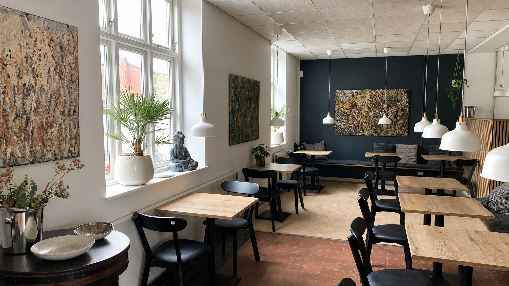
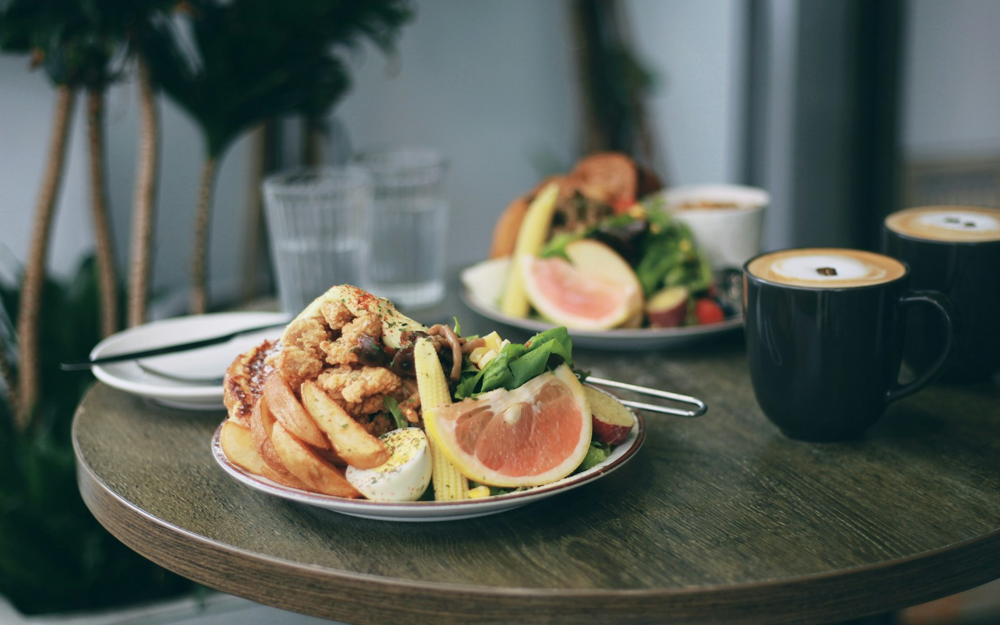

Om os
Naboernes café — i en historisk stationsbygning
Jernbane Cafeen ligger på Lille Torv 3 i Ikast, i den gamle stationsbygning fra 1877. Vi har drevet caféen siden 2023 — som mødested, frokoststed og catering for byen og omegnen.
Køkkenet
Mad fra to traditioner — laget af to mennesker
Niels og Rapheephon Rasmussen overtog Jernbane Cafeen i 2023. De er forskellige typer i samme køkken — og det er præcis det, der gør stedet til det det er.
Niels har sin baggrund fra Le Canard i København og Norsminde Kro. Det er gourmet-restauranter, hvor han lærte at lave dansk klassisk mad fra bunden. På Jernbane Cafeen tager han det med — men ned i et hverdagstempo. Det er den samme omhu med råvarer og teknik, bare uden den fine dining-formalitet.
Rapheephon kommer med thailandsk hverdagskøkken og tager imod gæsterne. Når du sidder ned, er det hende du møder først. Når dine retter kommer ud, er det hende, der har givet dem den sidste hånd.
Se hvad vi serverer


Stationsbygningen i Ikast, opført 1877
Stedet
Fra stationsforstanderens hus til lokalt mødested
Stationen i Ikast blev bygget i 1877 i forbindelse med togstrækningen fra Silkeborg til Herning. På 1. sal boede stationsforstanderen — bygningen har stort set bevaret sin oprindelige karakter lige siden.
I slutningen af 2010'erne blev selve stationsbygningen lavet om til café. Toggene kører stadig forbi, og udsigten er den samme som dengang. Bare med en kop kaffe i hånden i stedet for en billet.
I 2023 overtog Niels og Rapheephon caféen og gjorde den til det, den er i dag — et hyggeligt samlingspunkt for byen, med plads til både hverdagens frokost og festens selskab.
Råvarer
Lokalt, fritgående, økologisk når vi kan
Vores køkken tager udgangspunkt i sæsonens råvarer — og oftest er det fra lokale, fritgående dyr og økologiske grøntsager. Det er ikke et marketing-trick. Det er bare måden Niels og Rapheephon arbejder på.
Menuen skifter løbende. Det betyder, at den ret du elsker i dag måske ikke står på menuen i næste måned — men der står til gengæld noget andet på menuen, der er værd at prøve. Det er den nemmeste måde at lave god mad: køb det der er bedst lige nu, og lav det med omhu.
Se aktuelle retter
"Når passion og smag mødes på tallerkenen."
— Jernbane Cafeen · Ikast
Kom forbi
Lille Torv 3, 7430 Ikast
Ring på 30 80 72 41 eller skriv til info@jbcafeen.dk.
Vi sidder klar på stationen.